AdaptiveStieltjesAlgorithm¶
-
class
AdaptiveStieltjesAlgorithm(*args)¶ AdaptiveStieltjes algorithm used to build the orthonormal basis.
The algorithm builds a polynomial basis orthonormal with respect to a specific distribution.
Parameters: measure :
DistributionA measure for which the orthonormal polynomial basis is built.
See also
OrthonormalizationAlgorithm,ChebychevAlgorithm,GramSchmidtAlgorithmNotes
It implements an adaptive Stieltjes algorithm that builds the polynomial family orthonormal with respect to the distribution measure, using the
GaussKronrodadaptive integration method to compute the following dot-products: 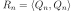 and 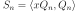 where 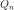 is the monic polynomial associated to the orthonormal polynomial 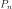, needed to compute the coefficients of the three-terms recurrence relation that defines (seeOrthogonalUnivariatePolynomialFamily):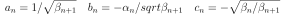
where 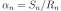 and 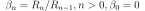.
Methods
getClassName()Accessor to the object’s name. getId()Accessor to the object’s id. getMeasure()Accessor to the measure. getName()Accessor to the object’s name. getRecurrenceCoefficients(n)Accessor to the recurrence coefficients. getShadowedId()Accessor to the object’s shadowed id. getVisibility()Accessor to the object’s visibility state. hasName()Test if the object is named. hasVisibleName()Test if the object has a distinguishable name. setMeasure(measure)Accessor to the measure. setName(name)Accessor to the object’s name. setShadowedId(id)Accessor to the object’s shadowed id. setVisibility(visible)Accessor to the object’s visibility state. -
__init__(*args)¶
-
getClassName()¶ Accessor to the object’s name.
Returns: class_name : str
The object class name (object.__class__.__name__).
-
getId()¶ Accessor to the object’s id.
Returns: id : int
Internal unique identifier.
-
getMeasure()¶ Accessor to the measure.
Returns: m :
DistributionThe measure for which the orthonormal polynomial basis is built.
-
getName()¶ Accessor to the object’s name.
Returns: name : str
The name of the object.
-
getRecurrenceCoefficients(n)¶ Accessor to the recurrence coefficients.
Parameters: n : integer
Index ot the recurrence step.
Returns: coef : sequence of float
Calculate the coefficients of recurrence 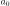, 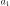, 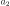 such that 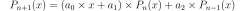.
-
getShadowedId()¶ Accessor to the object’s shadowed id.
Returns: id : int
Internal unique identifier.
-
getVisibility()¶ Accessor to the object’s visibility state.
Returns: visible : bool
Visibility flag.
-
hasName()¶ Test if the object is named.
Returns: hasName : bool
True if the name is not empty.
-
hasVisibleName()¶ Test if the object has a distinguishable name.
Returns: hasVisibleName : bool
True if the name is not empty and not the default one.
-
setMeasure(measure)¶ Accessor to the measure.
Parameters: m :
DistributionThe measure for which the orthonormal polynomial basis is built.
-
setName(name)¶ Accessor to the object’s name.
Parameters: name : str
The name of the object.
-
setShadowedId(id)¶ Accessor to the object’s shadowed id.
Parameters: id : int
Internal unique identifier.
-
setVisibility(visible)¶ Accessor to the object’s visibility state.
Parameters: visible : bool
Visibility flag.
-